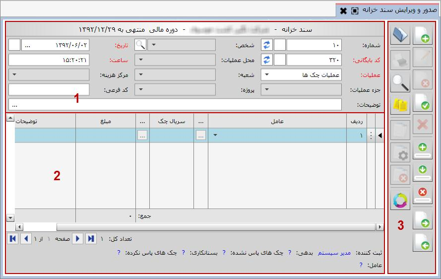

از این گزینه برای ثبت و ویرایش اسناد خزانه استفاده می شود. با کلیک روی منوی مربوطه صفحه زیر باز می شود:

1 : فرم صدور سند خزانه شامل سه قسمت می باشد که در شکل بالا مشخص شده است. قسمت بالای فرم صدور سند خزانه که با شماره 1 مشخص شده است شامل مشخصات خود سند از قبیل شماره، کد بایگانی، تاریخ و ساعت ثبت سند و مشخصات عملیات خزانه می باشد. اسناد صادر شده از سیستم خزانه بر حسب عملیات و به ترتیب صدور شماره بندی می شوند. این شماره الزامی نیست به عبارتی سند خزانه صادر شده می تواند فاقد شماره باشد، همچنین این شماره می تواند تکراری باشد یعنی دو سند خزانه می توانند دارای یک شماره باشند، البته این شماره قابلیت مرتب شدن دارد که در قسمت «بایگانی و مدیریت اسناد خزانه» شرح داده خواهد شد. هر سند خزانه ای که صادر می شود باید دارای تاریخ و ساعت باشد که به صورت پیش فرض مطابق با تاریخ و ساعت سیستم می باشد ولی قابلیت ویرایش دارد و شما می توانید هر دو را ویرایش کنید. کلیه اسنادی که از سیستم خزانه صادر می شوند به ترتیب صدور کدبندی می شوند، این کد الزامی می باشد و هر سند خزانه باید دارای یک کد بایگانی باشد، همچنین این کد قابلیت تکراری بودن و مرتب شدن را ندارد.
زمانی که هر یک از عملیات ها را انتخاب کنید مشاهده می نمایید که فیلد هایی که در مدیریت عملیات خزانه برای عملیات مورد نظر تعیین کرده بودید در فرم صدور سند خزانه فعال می گردد. همچنین اگر در هنگام تعریف عملیات خزانه، برای عملیات پارامتری در سطح سند تعریف کرده باشید، پارامتر تعریف شده به صورت یک فیلد در سطح سند نمایش داده خواهد شد.
2 : قسمت پایین فرم صدور سند(شماره 2) که اطلاعات ردیف های سند را تشکیل می دهد شامل عوامل خزانه، شماره چک و مبلغ مربوط به آن می باشد. در هر ردیف شما ابتدا باید عامل خزانه را از لیست باز شده انتخاب کنید، لیستی که باز می شود شامل تمامی عواملی است که به این عملیات اختصاص داده اید. اگر عاملی که انتخاب می کنید دارای پارامتر باشد یعنی هنگام ایجاد آن در قسمت عوامل خزانه پارامتری برای آن تعریف کرده باشید نشانگر
 روی قرار می گیرد (اگر پارامتر رادر حالت الزامی قرار داده باشید با نماد قرمز نشان داده می شود.).با کلیک روی آن یا زدن اینتر پنجره زیر ظاهر شده و در آن پارامتر مورد نظر سوال می شود:
روی قرار می گیرد (اگر پارامتر رادر حالت الزامی قرار داده باشید با نماد قرمز نشان داده می شود.).با کلیک روی آن یا زدن اینتر پنجره زیر ظاهر شده و در آن پارامتر مورد نظر سوال می شود:
بسته به نوع پارامتر تعریف شده، مقدار آن را وارد کرده یا از لیست موجود انتخاب کنید و تایید نمایید.
لازم به توضیح است که در صورتی که برای عملیات انتخاب شده در قسمت شماره 1 پارامتر تعریف کرده باشید آن پارامتر به صورت یک ستون به این فرم اضافه می شود و شما باید آن را برای تک تک ردیف های سند خزانه مشخص کنید.
در گام بعدی اگر عامل انتخابی مربوط به عملیات چک ها باشد، نشانگر روی
قرار می گیرد و با اینتر پنجره انتخاب چک ظاهر می شود که همانند صفحه مربوط به «معرفی و بایگانی برگه های چک» می باشد. در این قسمت لیست چک های تعریف شده در سیستم که صدور عملیات و عامل انتخاب شده برای آن مجاز است نمایش داده می شود، اگر عملیات و عامل انتخاب شده دریافت چک باشد و چک از قبل در صفحه «معرفی و بایگانی برگه های چک» تعریف شده باشد می توانید آن را انتخاب و تایید نمایید. همچنین اگر چک جزء چک های خرج شده است و دوباره به هر دلیلی دریافت شده است، با فعال کردن گزینه « دریافت از چک های خرج شده»، لیست چک های خرج شده را مشاهده و انتخاب نمایید. اگر بخواهید چک جدیدی را که در سیستم تعریف نشده دریافت کنید، با استفاده از نوار ابزار صفحه «انتخاب چک» می توانید چک جدید را برای سیستم تعریف کنید.
همچنین شما می توانید چند چک را به صورت گروهی انتخاب کنید که در این صورت هر چک جداگانه در یک ردیف فرم صدور سند خزانه نشان داده خواهد شد.
همان طور که در تصویر مشاهده می کنید در انتهای فرم اطلاعاتی از قبیل ثبت کننده و بدهی تا تاریخ این سند قرار دارد، همچنین هر یک از ردیف ها را که انتخاب کنید، اطلاعات مربوط به آن ردیف اعم از نام عامل، پارامتر عامل و مشخصات چک در پایین فرم نمایش داده می شود.
نوار عمودی سمت راست (قسمت شماره 3) نیز شامل ابزاری است که بسته به موقعیت سند تعدادی از ابزار ها فعال و تعدادی غیر فعال می باشند. در ادامه به توضیح تک تک گزینه ها می پردازیم:
 ایجاد سند جدید (F8):
برای ایجاد سند خزانه جدید می توانید از این آیکن استفاده کنید.
ایجاد سند جدید (F8):
برای ایجاد سند خزانه جدید می توانید از این آیکن استفاده کنید.
 ویرایش سند (F2):
این آیکن هنگامی که سند در حالت ثبت شده قرار دارد فعال می باشد و با کلیک بر روی آن سند از وضعیت ثبت شده خارج می شود و می توان آن را ویرایش کرد.
ویرایش سند (F2):
این آیکن هنگامی که سند در حالت ثبت شده قرار دارد فعال می باشد و با کلیک بر روی آن سند از وضعیت ثبت شده خارج می شود و می توان آن را ویرایش کرد.
 حذف سند (F9):
این آیکن برای حذف سند خزانه ثبت شده به کار می رود.
حذف سند (F9):
این آیکن برای حذف سند خزانه ثبت شده به کار می رود.
 ثبت سند (Ctrl+Enter):
پس از تکمیل اطلاعات فرم صدور سند خزانه یا اتمام ویرایش آن با کلیک بر روی این آیکن سند به حالت ثبت شده در می آید.
ثبت سند (Ctrl+Enter):
پس از تکمیل اطلاعات فرم صدور سند خزانه یا اتمام ویرایش آن با کلیک بر روی این آیکن سند به حالت ثبت شده در می آید.
 انصراف از ویرایش (Ctrl+F2):
اگر در حین ویرایش یک سند از ویرایش منصرف شدید می توانید از این آیکن استفاده کنید.
انصراف از ویرایش (Ctrl+F2):
اگر در حین ویرایش یک سند از ویرایش منصرف شدید می توانید از این آیکن استفاده کنید.
 ایجاد ردیف (Ctrl+Plus):
برای ایجاد یک ردیف در سند خزانه در حال ثبت یا ویرایش بکار می رود.
ایجاد ردیف (Ctrl+Plus):
برای ایجاد یک ردیف در سند خزانه در حال ثبت یا ویرایش بکار می رود.
 کپی ردیف (Ctrl+Shift+Plus):
چنانچه تمایل داشتید یک ردیف سند خزانه را عینا در ردیف بعدی کپی کنید از این گزینه استفاده کنید ، اگر ردیف مورد نظر را انتخاب کنید و روی این آیکن کلیک کنید یک کپی در ردیف زیری آن ایجاد می شود.
کپی ردیف (Ctrl+Shift+Plus):
چنانچه تمایل داشتید یک ردیف سند خزانه را عینا در ردیف بعدی کپی کنید از این گزینه استفاده کنید ، اگر ردیف مورد نظر را انتخاب کنید و روی این آیکن کلیک کنید یک کپی در ردیف زیری آن ایجاد می شود.
 حذف ردیف (Ctrl+Minus):
پیش از ثبت سند یا در هنگام ویرایش سند اگر تمایل داشتید یک ردیف حذف شود آن ردیف را انتخاب کنید و روی این آیکن کلیک کنید.
حذف ردیف (Ctrl+Minus):
پیش از ثبت سند یا در هنگام ویرایش سند اگر تمایل داشتید یک ردیف حذف شود آن ردیف را انتخاب کنید و روی این آیکن کلیک کنید.
 مشاهده سند بعدی (F12):
با این آیکن شما قادر هستید اگر بعد از سند جاری سند دیگری باشد یک سند بعد را مشاهده کنید .
مشاهده سند بعدی (F12):
با این آیکن شما قادر هستید اگر بعد از سند جاری سند دیگری باشد یک سند بعد را مشاهده کنید .
 مشاهده سند قبلی (F11):
با کلیک بر روی این آیکن شما یک سند قبل از سند جاری را مشاهده می کنید.
مشاهده سند قبلی (F11):
با کلیک بر روی این آیکن شما یک سند قبل از سند جاری را مشاهده می کنید.
 باز کردن (F3):
با این آیکن شما می توانید لیست کل اسناد صادر شده از خزانه را در پنجره ای که ظاهر می شود مشاهده کنید.
باز کردن (F3):
با این آیکن شما می توانید لیست کل اسناد صادر شده از خزانه را در پنجره ای که ظاهر می شود مشاهده کنید.
 چاپ این سند (Ctrl+P):
شما با این آیکن قادر خواهید بود از یک سند ثبت شده گزارش بگیرید، چنانچه روی این آیکن کلیک کنید پنجره ای نمایان می شود و شما می توانید گزارش مورد نظر خود را از گزارش های موجود انتخاب کرده و یا حتی گزارش دلخواه خود را طراحی کنید و سپس پرینت بگیرید.
چاپ این سند (Ctrl+P):
شما با این آیکن قادر خواهید بود از یک سند ثبت شده گزارش بگیرید، چنانچه روی این آیکن کلیک کنید پنجره ای نمایان می شود و شما می توانید گزارش مورد نظر خود را از گزارش های موجود انتخاب کرده و یا حتی گزارش دلخواه خود را طراحی کنید و سپس پرینت بگیرید.
 مشاهده گردش چک (F6):
در صورتی که در ردیف سند خزانه عامل مربوط به گردش چک و چک مربوطه انتخاب شده باشد، از طریق گزینه مشاهده گردش چک می توانید کلیه گردش چک انتخاب شده را از قبل تا این سند مشاهده نمایید.
مشاهده گردش چک (F6):
در صورتی که در ردیف سند خزانه عامل مربوط به گردش چک و چک مربوطه انتخاب شده باشد، از طریق گزینه مشاهده گردش چک می توانید کلیه گردش چک انتخاب شده را از قبل تا این سند مشاهده نمایید.
 ضمیمه کردن فایل ها:
گاهی لازم است فایل ها یا مستندات مرتبط با سند ثبت شده همراه با آن بایگانی شود. با استفاده از این گزینه که بعد از ثبت سند فعال می شود می توانید انواع فایل های مربوط به سند مورد نظرتان را به آن ضمیمه کنید.
ضمیمه کردن فایل ها:
گاهی لازم است فایل ها یا مستندات مرتبط با سند ثبت شده همراه با آن بایگانی شود. با استفاده از این گزینه که بعد از ثبت سند فعال می شود می توانید انواع فایل های مربوط به سند مورد نظرتان را به آن ضمیمه کنید.
برای ضمیمه کردن فایل ها مراحل را طبق شکل های زیر دنبال کنید:


در شکل قبل مشاهده می کنید که مسیر فایل انتخاب شده در پایین صفحه نمایش داده می شود، پس از زدن گزینه ، فایل ضمیمه در صفحه به نمایش درخواهد آمد. به همین ترتیب می توانید انواع مختلف فایل را به تعداد دلخواه به سند مورد نظرتان ضمیمه کنید، با این کار صفحه ضمیمه به شکل زیر نمایش داده خواهد شد:

فایل های ضمیمه شده در قالب مشخصی شامل نام فایل و نوع آن نمایش داده می شوند. اگر نشانگر ماوس را روی هر یک از فایل ها قرار دهید، سه گزینه روی هر یک فعال می گردد که به شرح زیر می باشند:

برای اجرای فایل ضمیمه شده از گزینه «اجرا» استفاده کنید.
با استفاده از گزینه «ذخیره» می توانید فایل ضمیمه را در محل مورد نظرتان ذخیره نمایید.
برای حذف فایل انتخاب شده از لیست فایل های ضمیمه از گزینه «حذف» استفاده می شود.
 لازم است بدانید برای استفاده از گزینه «ضمیمه کردن فایل ها» باید ابتدا مسیر ضمیمه ها را در پنجره «مدیریت سرور» تعیین کنید که شرح کامل آن را می توانید در فایل «قابلیت های عمومی نرم افزار» مشاهده نمایید.
لازم است بدانید برای استفاده از گزینه «ضمیمه کردن فایل ها» باید ابتدا مسیر ضمیمه ها را در پنجره «مدیریت سرور» تعیین کنید که شرح کامل آن را می توانید در فایل «قابلیت های عمومی نرم افزار» مشاهده نمایید.
 تاریخچه عملیات:
با استفاده از گزینه تاریخچه عملیات می توانید کلیه عملیات انجام شده بر روی سند جاری را اعم از ایجاد، ویرایش، صدور سند حسابداری و ... را مشاهده نمایید.
تاریخچه عملیات:
با استفاده از گزینه تاریخچه عملیات می توانید کلیه عملیات انجام شده بر روی سند جاری را اعم از ایجاد، ویرایش، صدور سند حسابداری و ... را مشاهده نمایید.
 سند مالی (Ctrl + J) :
با کلیک بر روی این گزینه منوی زیر باز می شود :
سند مالی (Ctrl + J) :
با کلیک بر روی این گزینه منوی زیر باز می شود :

محاسبه سند حسابداری :
در صورتی که در سیستم حسابداری به شما اجازه صدور سند حسابداری داده شده باشد این گزینه در فرم فعال می شود و با کلیک بر روی این آیکن می توانید برای سند خزانه ای که سند حسابداری ندارد سند حسابداری صادر کنید. البته بعد از ثبت سند خزانه به صورت اتوماتیک فرم صدور سند حسابداری نمایان می شود که تمام عوامل آن طبق الگوهایی که در سیستم حسابداری تعریف شده مشخص شده است و بعد از بررسی می توانید سند حسابداری را صادر کنید.
چنانچه مایل بودید صدور سند حسابداری را از حالت اتوماتیک خارج کنید می توانید از قسمت تنظیمات خزانه داری این کار را انجام دهید.
مشاهده سند حسابداری :
با این گزینه شما می توانید سند حسابداری صادر شده برای سند خزانه را مشاهده کنید. چنانچه برای سند خزانه انتخاب شده سند حسابداری صادر نشده باشد سیستم به شما هشدار می دهد که هیچ سندی برای مشاهده وجود ندارد.
 حذف سند حسابداری :
اگر برای یک سند خزانه سند حسابداری صادر کرده باشید و هنوز سند حسابداری در سیستم حسابداری تایید نشده باشد با این آیکن می توانید سند حسابداری آن را حذف کنید.
حذف سند حسابداری :
اگر برای یک سند خزانه سند حسابداری صادر کرده باشید و هنوز سند حسابداری در سیستم حسابداری تایید نشده باشد با این آیکن می توانید سند حسابداری آن را حذف کنید.
سوال : اضافه کردن عنوان هزینه جدید به عملیات صورت خلاصه تنخواه .
جواب : برای اینکار از منوی تعریف جزء عملیات، عملیات صورت خلاصه تنخواه را انتخاب کرده و بر روی گزینه اضافه کلیک کنید. سپس عنوان هزینه و کد حساب مرتبط با آن را وارد کرده و تایید نمایید.(در صورتی که کد حساب مورد نیاز وجود نداشت می توانید از منوی تعریف سرفصل حساب ها در سیستم حسابداری، گروه هزینه هارا انتخاب کرده و حساب مورد نظررا در یکی از حساب های کل تعریف نمایید.)
سوال : اضافه کردن عنوان هزینه جدید به عملیات ثبت هزینه .
جواب : برای اینکار از منوی تعریف جزء عملیات، عملیات ثبت هزینه را انتخاب کرده و بر روی گزینه اضافه کلیک کنید. سپس عنوان هزینه و کد حساب مرتبط با آن را وارد کرده و تایید نمایید.(در صورتی که کد حساب مورد نیاز وجود نداشت می توانید از منوی تعریف سرفصل حساب ها در سیستم حسابداری ، گروه هزینه هارا انتخاب کرده و حساب مورد نظررا در یکی از حساب های کل تعریف نمایید.)